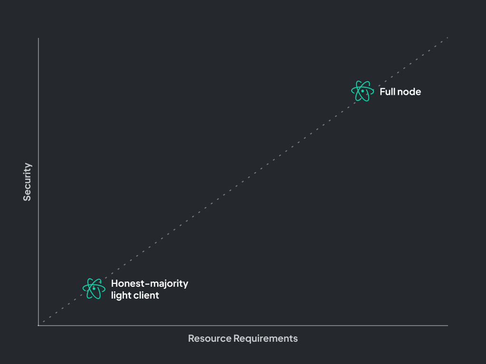

Modular Movement
Although L2s have opened up a margin of cost reduction for access to the Ethereum ecosystem, the total throughput increase has been modest at best (with both optimistic and ZK approaches). And in times of high traffic on Ethereum, L2s have failed to keep costs low, often rising to several dollars per transaction.
As a community, if we want to achieve true global access to blockchain technology, we cannot settle for a modest reduction in fees. We need dramatic change. Change that not only reduces waste and inefficiency but opens up new use cases never before seen in the blockchain space.
There is an ongoing colossal shift happening in layer-1 (L1) blockchain architectures. We are moving away from a monolithic design, where consensus, data availability, and execution are tightly coupled (e.g. today's Ethereum), to a modular future, where execution is separated from data availability and consensus (e.g. tomorrow's Eth2, or Celestia). This separation allows for specialization at the base layer, delivering a significant increase in bandwidth capacity.
Why Modular?
A modular blockchain architecture does not inherently enable scaling. The properties that are derived as a result are what make this possible. Fuel was built for fraud proofs, enabling trust-minimized light clients, enabling high security without requiring high resource usage.
Security vs. Resource Requirements

In a monolithic architecture, users must choose between high security and high computational resource usage and trusted security and low computational resource usage. For example, Ethereum was designed to allow consumer-grade hardware to be able to run a full node, a type of node that offers maximum security by downloading and verifying every single transaction. By running a full node, users don’t have to trust that the chain is valid and can instead verify themselves. However, running a full node requires a lot of disk space and non-negligible CPU allocation and can take days to sync the blockchain from genesis.
Alternatively, a user can run a light client, also known as an honest majority light client. Instead of downloading all blocks to verify transactions, light clients only download block headers and check their proof-of-work (PoW), assuming the heaviest chain is valid. Honest majority light-clients that trust that a majority of validators are honest and will reject fraudulent transactions.
The amount of computational resources and storage needed to run a light client is lower than a full node by several orders of magnitude.
An easy way to remember the difference: An honest majority light client is only secure if most validators are honest. A full node is honest even if all validators are not honest.
By running a full node, you get the maximum security of verifying transactions but also have to spend a lot of computational resources to achieve this. Because a light client doesn’t need to run 24/7 and doesn’t interact directly with the chain, the computational requirement is much lower, but you also get low security.
Trust-Minimized Light Clients

Fuel’s design lets light clients say that blocks are valid through fraud proofs. This eliminates the need for a trusted party while maintaining low resource requirements and achieving high security. For monolithic chains like Ethereum, there is an ideological incentive to keep the computation requirements for full nodes low to allow users to be truly sovereign.
Because Fuel was built for fraud proofs, the resource requirements for full nodes can be higher, thus increasing bandwidth capacity while still allowing users to verify the chain through trust-minimized light clients.